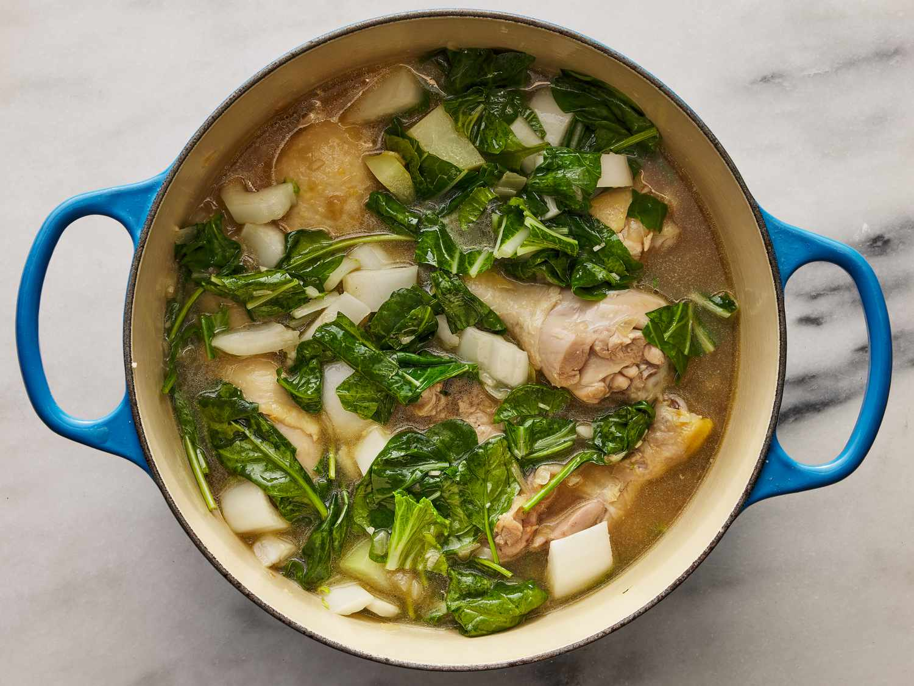

Chicken Tinola

Description
A traditional Filipino food that is usually paired with white rice
It is a chicken soup loaded with vegetables
The delicious pungent taste came from the fish sauce which is a key ingredient of the recipe.
Ingredients
- 1 tablespoon cooking oil
- 1 medium onion, chopped
- 2 cloves garlic, minced
- 1 (1 1/2 inch) piece fresh ginger, peeled and thinly sliced
- 1 tablespoon fish sauce
- 3 pounds chicken legs and thighs, rinsed and patted dry
- 2 (14 ounce) cans chicken broth
- 1 chayote squash, peeled and cut into bite-sized pieces
- salt and ground black pepper to taste
- 1 head bok choy, chopped
- 1 (8 ounce) package fresh spinach, chopped
Steps
- Gather all ingredients.
- Heat oil in a large pot over medium heat.
Add onion and garlic; cook and stir until fragrant, about 2 minutes.
- Add ginger and fish sauce; cook and stir for 1 to 2 minutes.
Stir in chicken and cook for 5 minutes.
- Pour in chicken broth and cook for 5 minutes. Add squash and
simmer until chicken is no longer pink in the center, about 10 minutes.
Season with salt and pepper.
- Add bok choy and spinach; cook until spinach is just wilted, 1 to 2 minutes. Serve hot.